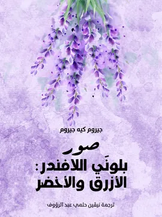

صور بلونَي اللافندر: الأزرق والأخضر

قراءة عربية أصلية محددة النطاق في الصفحات 9، 10 من ملف PDF المرتبط، وليست تلخيصا كاملا للكتاب. نناقش ما تدعمه هذه المقاطع فقط.
وغد من بيكاديلي
يفتتح الكتاب بتأمل ساخر: يتفوق الأدب على الحياة بشخصياته المرسومة بوضوح والمتسقة في سلوكها، أما الطبيعة فدائما ما تعوزها اللمسة الفنية وتستمتع بخلق المستحيل. كان ريجينالد بلايك نموذجا معهودا من الأوغاد الحسني التربية الذين يلقاهم المرء عادة في المنطقة بين ميدان بيكاديلي وتقاطع هايد بارك كورنر؛ كان قاسيا بلا ذرة عطف، وذكيا دون بصيرة، لذا لم تمثل له الحياة أي مشكلة، وكان يتذوق ملذاتها دون شعور بالذنب. كانت فكرته عن الأخلاق هي مراعاة تعليمات الطبيب من ناحية ومحاذير القاضي من الناحية الأخرى، ونظرا إلى حرصه الدائم على الالتزام بأوامر هذين الاثنين ظل متمتعا بصحته في سن الخامسة والأربعين. نقل النص إلى العربية نيڤني حلمي عبد الرؤوف.
زاوية وحدود القراءة
قراءة الصفحتين ٩ و١٠ (فصل ريجينالد بلايك)؛ النطاق رسم الشخصية فقط.
الطبعة والقراءة
٢٠٢٤ جميع حقوق النشر الخاصة بتصميم هذا الكتاب ،وتصميم الغلاف ،والترجمة العربية لنص هذا الكتاب م ر خصة بموجب رخصة املشاع الإبداعي :ن سب ا ملصن ف ،الإصدار ٤٫٠جميع حقوق النشر الخاصة بنص العمل الأصلي خاضعة للملكية العامة
تنزيل PDF المجاني ↓ القراءة والمصدر الرسمي ↗